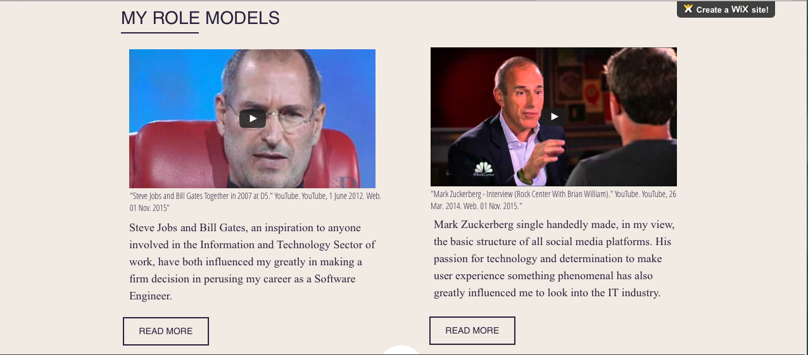

This course did not only teach me the fundamentals of code, but also gave me a polished understanding of the world that is based around it. In ICS we were given 2 major projects that asked us to discover the world related to the IT field, and the impacts it has on us as individuals as well as the world as a whole. In my view, these projects have granted me the time to step away from my code and analyze any difficulties, and at the same time learn about fundamentals of IT outside of my computer screen.
I recently decided that I wanted to become a Software Engineer.
I love everything about the workings of a computer, and at a very small age knew what my goal was in the future. Today, I stand firmly with my decision of going into the IT field, and primarily my decision has been based of off the career project we did in ICS. This project asked us to discover various careers that are associated with the IT field, and after completing some heavy research, I have learned that there is probably only a couple of careers in the world that do not require the basics of computing. It has been almost a year and a half in the program of International Business and Technology, learning the aspects of various academic standards, incorporated with technology, which will prove extremely beneficial in the latter stages of my life. I have become a mature young adult and I have taken a huge step forward towards my future goals. Personally, I would like to pursue a career in the IT sector, and I feel like this career picking project was a great way for me to lay out my interests related to all aspects of technology. I enjoy every bit of coding, and would love to work with people that have more experience working with code, and I feel being able to work in the IT sector will really polish my skills and allow me to peruse my passion.
I am very grateful of my teacher, and his idea of making us completes such a project. For some it would have been quite boring and a waste of time to complete, however, for me it was a project that allowed me to find myself. Especially with almost just a year to go in high school, I really want to succeed in something I love, and really hope to do so in my chosen field.
Time matters a lot!
The element, which I really enjoyed in the process of completing both projects, is the fact that we had the ability to take out time in researching required information. Personally, I feel both projects completed held very dialect topics, and in order to fully understand and link such topics to yourself we need time. For our careers in IT project, we were given a total time of 5 class days as well as the weekend, a lot of time! This gave me the opportunity to really understand not only what my teacher required from me for this project, but also how it plays an implement in my daily life. As a result, due to not being rushed during this project has allowed me to decide on my future career!
Stepping away from code and my desire to strive in the IT field, I personally found a lot of satisfaction in the element of the storyboard involved with our 2nd non-programming projects. The reason why I found this element quite appealing was because it allowed me to skim through all conducted research, pull out the important stuff and throw out the junk. Is that not a lot of work you may ask? Well, coming into this course I wanted to take as much as I could away from it, and acquiring knowledge from everyone researched topics for this project allowed me to get a large view of the negative health effects attached to computing. With all this information, I got to use my creative side to put together a script/storyboard for our 20-minute video. This was a great experience as the element of a storyboard allowed me to discover various aspects of CS I did not know about, and it also allowed me to use my creative side!
I would never have been able to achieve success in this course, if it was not for such key elements being presented to me.